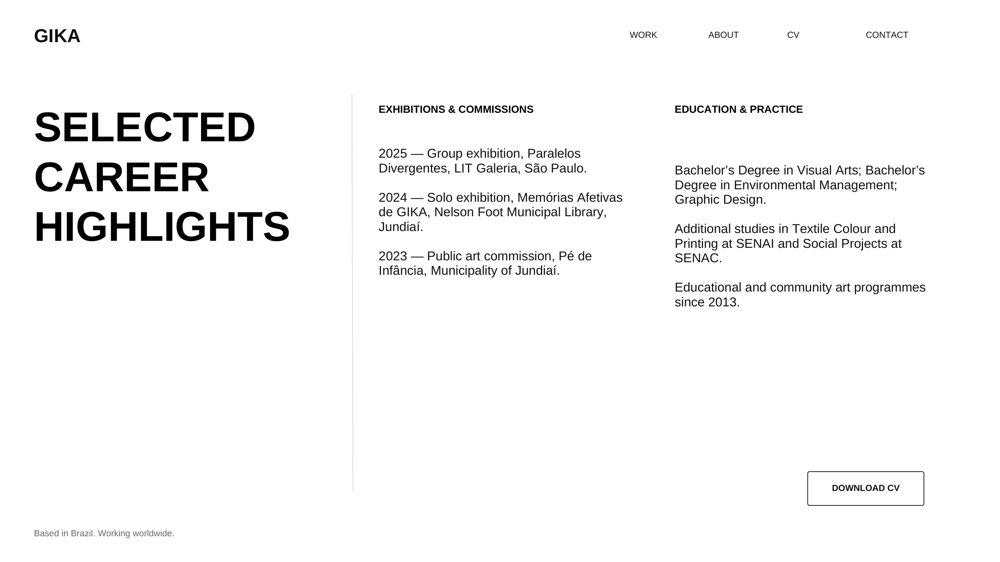

HITOS DE LA TRAYECTORIA
EXPOSICIONES Y ENCARGOS
2025 — Exposición colectiva, Paralelos Divergentes, LIT Galeria, São Paulo. 2024 — Exposición individual, Memórias Afetivas de GIKA, Biblioteca Municipal Nelson Foot, Jundiaí. 2023 — Encargo de arte público, Pé de Infância, Municipalidad de Jundiaí.
FORMACIÓN Y PRÁCTICA
Grado en Artes Visuales; Gestión Ambiental; Diseño Gráfico. Estudios adicionales en Colorimetría Textil y Estampación en SENAI y Proyectos Sociales en SENAC. Programas de arte educativo y comunitario desde 2013.
